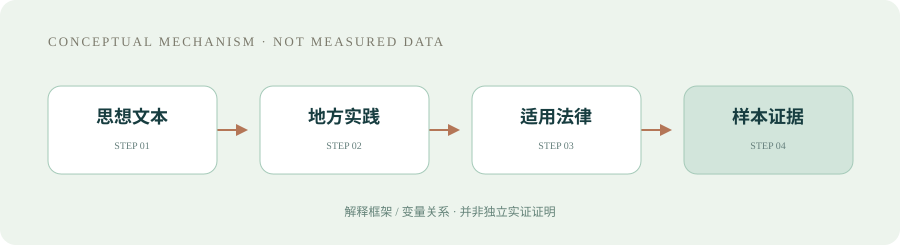

社会与家庭 · 研究提纲 · 2026-11-21 整理
家庭、性别规范与财产规则：区分文本与现实
将思想文本、社会实践、适用法律与网络故事分开检验。
证据状态：研究提纲。 这是一份研究问题与候选解释清单；源材料尚不足以支持已完成研究的结论。 概念图仅供解释，不构成统计证据。

概念图：思想文本 → 地方实践 → 适用法律 → 样本证据；非实证统计数据状态：本周可见朱熹理学对家庭与女性的讨论、夫妻财产制度等提问，未取得对应完整史料和适用的具体法律条文。
必须区分四层：思想家原文与后人解释；同时代不同地域及阶层的生活实践；特定法域和年代的法律与执行；网络个案与某个人群普遍行为分布。规范被反复提及不能证明某群体当时普遍行为如何；少量婚姻故事也不能代表整个性别群体。
现代夫妻财产研究应列法域、生效时间、婚前婚后财产性质及案例事实；在核对原文前不给出普遍化的个人法律结论。后续分别建立思想史资料、历史家庭研究及当代法律资料清单。历史机制 · 证据方法。